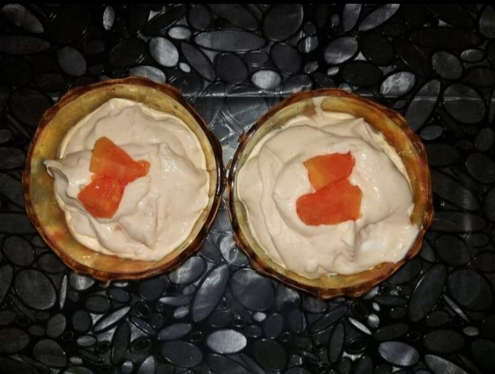

Who doesn't love some creamy ice cream for dessert? Our favourite icecream whose origin dates back to the era of King Tang of Shang, China who ordered a dessert make with ice and fruits. Ice cream then has spread to every nook and corner of the world and is consumed in different forms and flavours. So let's learn a 2-ingredient ice cream recipe.
In this recipe, I have tried to combine the goodness of ripe papaya with our favourite ice cream. Papaya is rich in Vitamin A, Magnesium, Beta carotene, Vitamin B, Leutin,Zeaxanthin, Vitamin E etc.
Ingredients:
Procedure:
Enjoy!!! Your favourite icecream with goodness of papaya.
